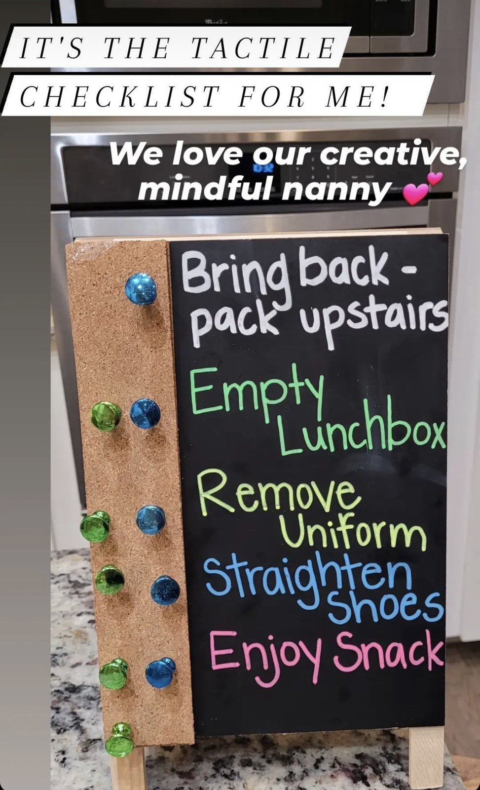
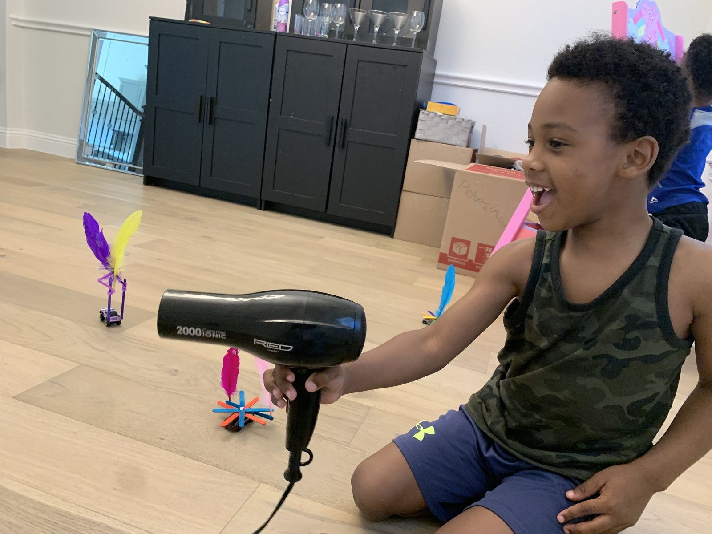
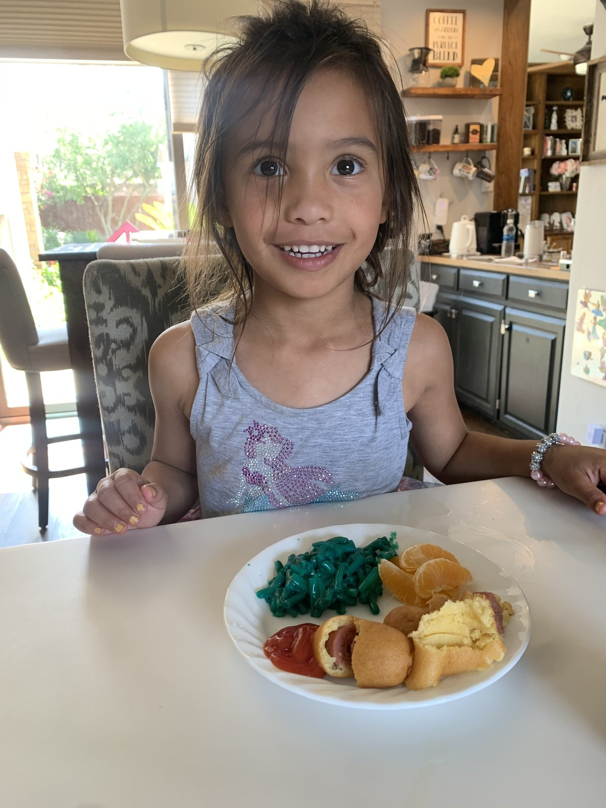
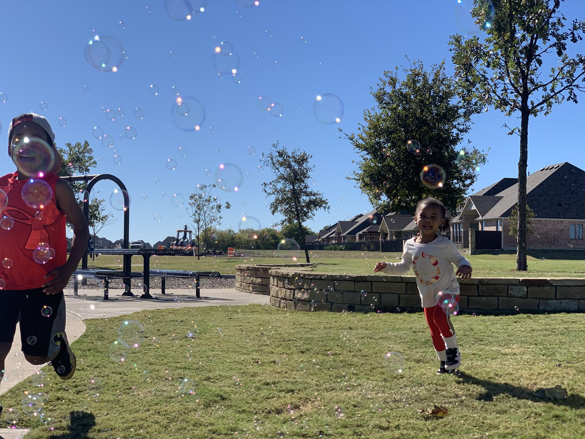
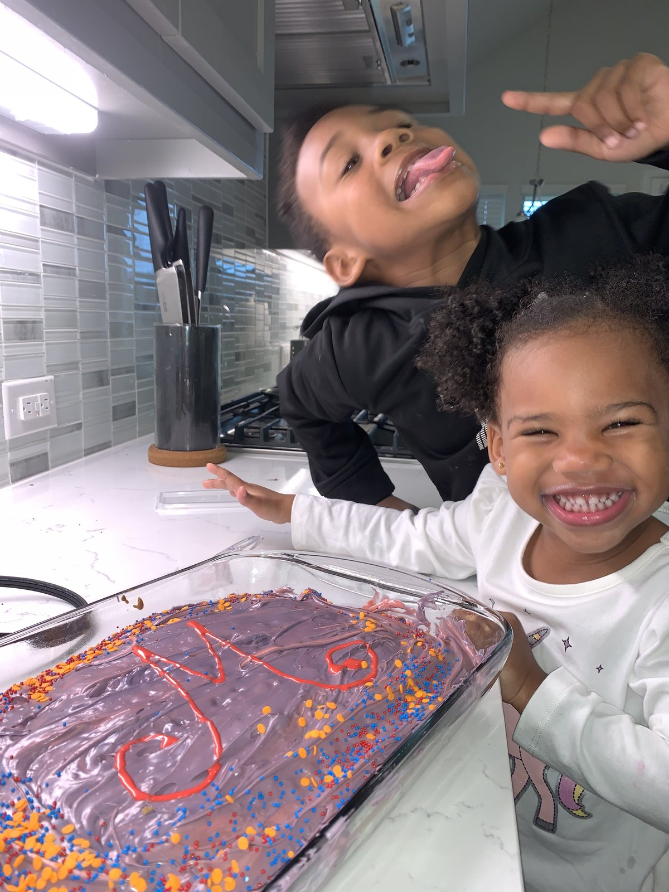
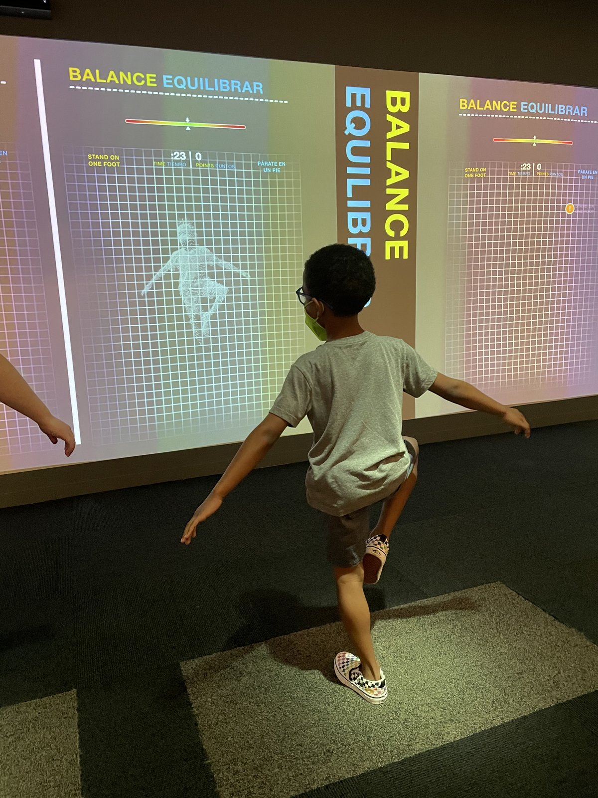

Childcare & Household Experience
Prepared for placement agencies and private families.
forthcoming
Keondra Hunter
Private Nanny & Household Professional
Private household professional with over a decade of experience spanning early childhood education, private childcare, and personal assistant support within high-net-worth and high-profile households in Dallas and the greater Texas area.
Has operated in dual capacities — as a primary nanny and as a personal assistant to the household principal — bringing genuine range to private household roles. Particular strengths include school-age childcare (ages 4–14), behavioral support, multi-home coordination, travel accompaniment, vendor sourcing, and calendar management.
Accustomed to the discretion, professionalism, and adaptability expected in high-profile private households. Comfortable with non-disclosure agreements, high-security environments, and the distinct rhythms of families whose time, privacy, and consistency are paramount.
-
2022–2024
Travel & Household Nanny Private Family (High-Profile) · Dallas, TX · Houston, TX · Extended Travel
Children: Ages 2 and 3 upon hire
- Served as primary nanny for two young children across multiple residences in Dallas and Houston, maintaining consistency in routine, tone, and expectations across both households.
- Accompanied the family on extensive domestic travel as the designated childcare provider, including flights and extended stays — roles that require comfort with logistics, high-security environments, and discretion.
- Coordinated independently with each parent's schedule across separate primary residences, serving as a steady point of continuity for the children during transitions.
- Managed developmentally appropriate daily care for toddlers, including structured routines, meals, nap schedules, enrichment activities, and milestone tracking.
- Operated under strict confidentiality consistent with the standards of high-profile households. Reference available with the family's consent upon agency inquiry.
-
2021–2023
Family Assistant & Nanny to Principal Private Family (HNW) · Dallas, TX
Children: Ages 6 and 13 upon hire · Monday–Friday, 12 pm–8 pm, with occasional weekends
- Evolved from primary nanny to trusted household manager and family assistant, taking on increasing responsibilities as the family's needs grew and confidence in capabilities expanded.
- Orchestrated all aspects of household operations — comprehensive calendar management, appointment scheduling for all family members (medical, dental, therapeutic, automotive, and personal services), and coordination of home service providers.
- Managed academic support systems for both children, including maintaining communication with teachers, sourcing and scheduling tutors aligned with the children's needs, and creating learning portfolios to maintain continuity during travel.
- Provided specialized behavioral guidance and emotional support for a child with ADHD, implementing effective coping strategies and structured routines in coordination with the family's care plan.
- Planned and executed complex family travel arrangements including wardrobe planning, school notifications, academic work coordination, and comprehensive trip preparation.
- Led event planning and execution for large-scale family celebrations — birthday parties, holiday gatherings, and staff luncheons — often serving the household's extended family network in Dallas.
- Oversaw multiple home renovation projects, including a full kitchen renovation, a game room renovation, and a new home construction project, coordinating vendors and timelines throughout.
- Sourced personal service providers across beauty, photography, and lifestyle categories on behalf of the principal.
- Supported the parents' businesses (tech and hospitality ventures) with errands, administrative tasks, and light operational support.
- Managed household inventory and financial systems using family accounts for groceries and household needs.
- Contributed artwork and creative pieces for the household's interior.
-
2020–2021
Nanny Private Family · Rockwall, TX
Children: Ages 2 and 5 upon hire · Monday–Friday, 7 am–6 pm
- Guided the family through the critical pandemic-to-normalcy transition, creating a stable, comforting environment that helped the children adapt to lifestyle changes with confidence.
- Successfully completed potty training for the toddler using positive reinforcement techniques and consistent daily routines.
- Facilitated remote learning for the school-age child, ensuring academic continuity and engagement during an unprecedented period.
- Prepared nutritious meals for breakfast, lunch, and dinner, accommodating the family's dietary preferences and nutritional needs.
- Designed daily enrichment programming combining outdoor play, educational activities, creative projects, and safe socialization opportunities.
- Administered medication as needed with parental consent, maintaining detailed logs of routines, milestones, and daily activities.
- Managed children's laundry, light housekeeping, and transportation to activities and appointments. Provided infant care alongside the mother as needed.
-
2020
Nanny Private Family · Carrollton, TX
Children: Ages 2 and 4 upon hire · Monday–Friday, 9 am–5 pm · COVID-era placement
- Created structured daily routines that provided security and consistency during the uncertainty of the pandemic and school closures.
- Implemented potty training protocols with patience and positive reinforcement strategies.
- Supported remote learning initiatives for preschool-age children, maintaining educational momentum during school closures.
- Fostered independence and decision-making skills through daily routines including outfit selection and self-care activities.
- Prepared wholesome meals throughout the day and arranged safe socialization opportunities through vetted playdates and outdoor activities.
- Maintained a clean, organized household environment and provided detailed parent communication on daily progress.
-
2023–
Center Director · Mathnasium of Highland Park Dallas, TX
- Oversee daily operations of an academic enrichment center serving students from early childhood through high school.
- Manage staff, student progress tracking, parent communication, and scheduling for a high-volume center in a competitive Dallas market.
- Developed institutional communication assets including parent outreach scripts, email templates, and escalation protocols.
-
2023–2025
STEAM Teacher · Amazing Explorers Academy Dallas, TX
- Managed classroom operations for 20+ students while maintaining organized documentation and meeting program deadlines.
- Developed and implemented engaging Reggio-inspired lessons, adapting content to diverse learning needs and developmental stages.
- Tracked student progress using multiple software systems and provided detailed reporting for families and administrators.
- Designed hands-on lesson content integrating art, science, and engineering for ages 3–6.
-
2018–2020
Lead Classroom Teacher · Hope Day School Dallas, TX
- Advanced from assistant to lead teacher within the first year, demonstrating classroom management and instructional capabilities.
- Developed and implemented responsive, developmentally appropriate curriculum promoting social, physical, cognitive, and emotional growth.
- Served as role model and mentor to support staff, providing guidance on best practices in early childhood education.
- Facilitated regular parent conferences and maintained open communication channels to discuss children's progress, interests, and developmental needs.
- Observed, documented, and reported on individual and group behaviors to support each child's optimal development.
A selection of images from ongoing teaching, studio, and enrichment practice.
Scroll to view →






Childcare
- Infant & toddler care
- Multiple age groups (infancy to late elementary)
- ADHD & behavioral support
- Special needs awareness
- Developmental milestone tracking
- Potty training
- Homework & academic support
- Remote learning facilitation
- Reggio Emilia & Montessori frameworks
- Enrichment & educational programming
Household
- Calendar & schedule management
- Appointment coordination
- Travel planning & accompaniment
- Event & celebration planning
- Multi-home coordination
- Vendor & service provider sourcing
- Renovation & project oversight
- Household inventory & budgets
- Errands & logistics
- Light housekeeping & children's laundry
Standards
- Discretion & confidentiality
- NDA-compliant work
- High-profile household etiquette
- Parent communication
- Meal planning & nutrition
- Medication administration
- Crisis management
- Cultural sensitivity
- Safe driving
- CPR & First Aid certified
Currently represented by:
- West Side Nannies
- Ivy Lane Staffing
Written references and contact details for past families and supervisors are available upon direct request.
Direct Inquiry